Cache¶
-
Cache 定义：用于改善慢速存储器平均访问时间的“小而快”的存储
Tip
- 缓存是一个通用概念，广泛应用于处理器、操作系统、文件系统和应用程序中
- 万物皆缓存：
- Registers 是变量的 cache
- L1 cache 是 L2 cache 的 cache
- L2 cache 是 memory 的 cache
- Memory 是 disk 的 cache，即 virtual memory
- TLB 是 page table 的 cache
- Branch predictor 可看作预测信息的 cache
-
相关定义
- Cache Hit/Miss：处理器能够/无法在缓存中找到所请求的数据项
- Cache Block/Line：一个固定大小的数据集合，包含所请求的字，从主存中检索并放入缓存中
- 局部性原理
-
Cache Miss
- 处理缓存未命中所需的时间取决于：
- 延迟 (Latency)： 获取数据块中第一个字所需的时间
- 带宽 (Bandwidth)： 获取该数据块剩余部分所需的时间
- 原因
- 强制性未命中 (Compulsory)： 首次访问某个数据块
- 容量未命中 (Capacity)： 数据块因缓存满被丢弃后，再次被访问
- 冲突未命中 (Conflict)： 程序反复访问多个不同的数据块，而这些数据块映射到缓存中的同一位置
- 解决方案：增大缓存大小、提高相联度
- 处理缓存未命中所需的时间取决于：
-
性能提高：充分利用局部性原理（大多数程序不会均匀地访问所有代码或数据）
- 时间局部性：将最近访问过的数据项保留在更靠近处理器的位置
- 空间局部性：将最近访问过的连续字组（数据块）移动到更靠近处理器的位置
关于 cache 的 36 个名词
| English | Chinese | English | Chinese | English | Chinese |
|---|---|---|---|---|---|
| Cache | 高速缓存 | Full associative | 全相联 | Write allocate | 写分配 |
| Virtual memory | 虚拟存储器 | Dirty bit | 脏位 | Unified cache | 统一缓存 |
| Memory stall cycles | 存储停顿周期 | Block | 块 / 行 | Block offset | 块内偏移 |
| Misses per instruction | 每指令缺失数 | Direct mapped | 直接映射 | Write back | 写回 |
| Valid bit | 有效位 | Data cache | 数据缓存 | Locality | 局部性 |
| Block address | 块地址 | Hit time | 命中时间 | Address trace | 地址轨迹 |
| Write through | 写直达 | Cache miss | 缓存缺失 | Set | 组 |
| Instruction cache | 指令缓存 | Page fault | 缺页中断 | Miss rate | 缺失率 |
| Random replacement | 随机替换 | Index field | 索引段 | Cache hit | 缓存命中 |
| Average memory access time | 平均访存时间 | Page | 页 | Tag field | 标志段 |
| n-way set associative | n 路组相联 | No-write allocate | 非写分配 | Miss penalty | 缺失惩罚 |
| Least-recently used | 最近最少使用 | Write buffer | 写缓冲 | Write stall | 写停顿 |
Cache 设计¶
-
多级缓存组织
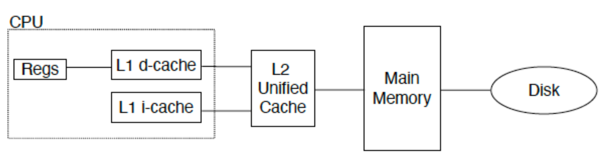
- 统一缓存：
- 所有内存请求都通过同一个缓存
- 硬件需求较少，但性能较低
- 分离 I & D 缓存：
- CPU 中指令和数据使用独立的缓存
- 需要额外的硬件，但也有简化之处（e.g. I-cache 是只读的）
- 统一缓存：
-
设计的四个问题
- Q1：数据块可以放在高级别存储/主存的什么位置？（块放置：全相联、组相联、直接映射）
- Q2：如果数据块在高级别存储/主存中，如何找到它？（块识别：标志位/数据块）
- Q3：在 Cache/主存缺失时，应该替换哪一块？（块替换：随机算法、最近最少使用、先进先出）
- Q4：写入时会发生什么？（写策略：回写或配合写缓冲器直写）
块放置¶
- 直接映射：通常利用块地址取模的方式，将数据块映射到缓存中（容易冲突）
- 全相联：块可以放置在任意一个空的位置（寻找不方便）
-
组相联：
- 结合上述两种方法
- 将缓存分组，利用取模的方式将数据块映射到组中
- 在组内，块可以放置在任意一个空位置
- 如果每个组包含 \(n\) 个数据块，则称该 Cache 为 \(n\) 路组相联
- 大多数情况下， \(n \leq 4\)
- 相联度越高，Cache 空间的利用率就越高，数据块碰撞的概率越低，缺失率也就越低
Tip
- Direct mapped 相当于 1-way set associative
- Fully associative 相当于 m-way set-associative (m blocks)
- 结合上述两种方法
块识别¶
-
每个块都有一个地址标签
Tag，用于存储该块中数据的内存地址- 检查缓存时，处理器会将请求的内存地址与缓存标签进行比较
- 如果两者相等，则发生缓存命中，数据存在于缓存中
-
通常，每个缓存块还有一个有效位，用于指示缓存块的内容是否有效
-
物理地址的格式
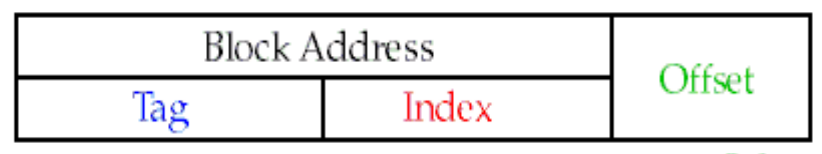
Index：- 组相联：用于选择缓存中的组，位数为 \(\log_2(\#sets)\)
- 直接映射：用于选择缓存中的块，位数为 \(\log_2(\#blocks)\)
Byte offset：用于选择缓存块中的字节，位数为 \(\log_2(size\_of\_block)\) （字节数）Tag：用于在组内或缓存中查找匹配的块（判断是不是目标 block），位数为除去索引和字节偏移的剩余位数
cache 大小计算
地址长度：64 位
映射方式：直接映射
缓存大小：\(2^n\) 个块（因此 Index 需要 \(n\) 位）
块大小：\(2^m\) 个字 (\(2^{m+2}\) 字节 = \(2^{m+5}\) 位)
- Word Offset：使用 \(m\) 位定位块内的字
- Byte Offset：使用 2 位定位字内的字节（因为 1 字 = 4 字节）
关键公式计算：
-
标签位数：\(64 - (n + m + 2)\)
-
总缓存占用空间：每个条目包含：数据位 + 标签位 + 有效位
\[ \text{Total bits} = 2^n \times (\text{block size} + \text{tag size} + \text{valid bit}) \\ = 2^n \times (2^m \times 32 + (64 - n - m - 2) + 1) \\ = 2^n \times (2^m \times 32 + 63 - n - m) \]
Exercise 1
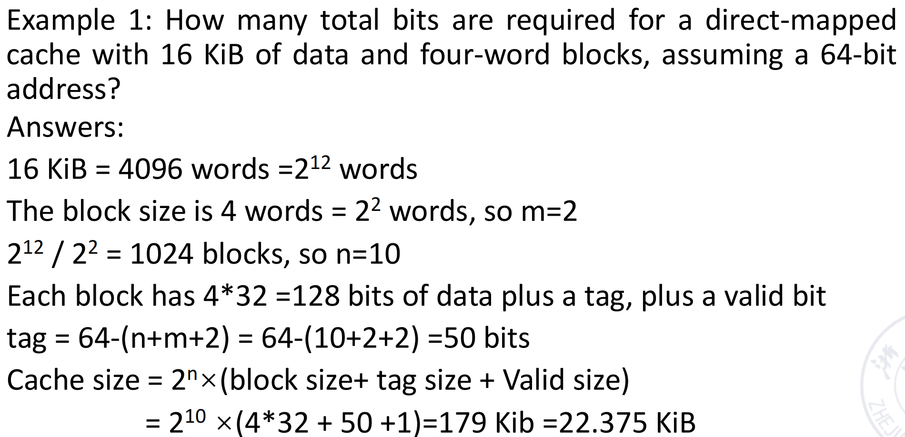
Exercise 2
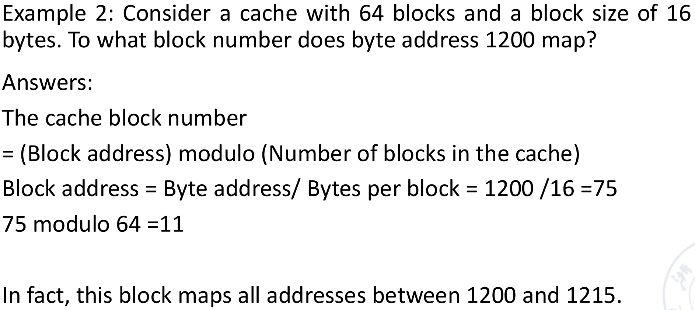
-
查找步骤
- 直接映射
- 是否有效
- 缓存行中的标签位是否与地址中的标签位匹配
- 如果均满足，则缓存命中，利用块偏移读取块中数据
- 组相联
- 是否有效
- 组其中一块的标签位是否与地址中的标签位匹配
- 如果均满足，则缓存命中，利用块偏移读取对应块中数据
- 直接映射
Cache 有限状态机
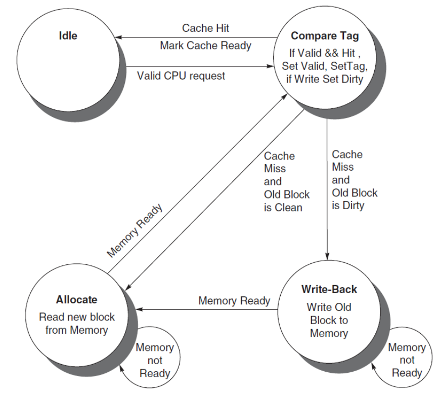
块替换¶
在指令缓存缺失时采取的步骤
- 将原始的 PC 值发送到内存（PC-4）
- 指示主存执行读取操作，并等待内存完成访问
- 写入缓存条目：将来自内存的数据放入该条目的数据部分，将地址的高位（来自 ALU）写入标记字段，并将有效位置为开启
- 从第一步重新开始指令执行，这将重新取指，而这一次将在缓存中找到该指令
-
随机替换：随机选择任何一个数据块
- 在硬件上易于实现，只需要一个随机数生成器
- 将均匀地分布在整个缓存中
- 可能会驱逐一个即将被访问的数据块
-
最近最少使用（LRU）：选择缓存中最近使用最少的块进行替换
- 假设最近被访问过的数据块更有可能再次被引用
- 这需要在缓存中增加额外的位数来追踪访问情况
Example
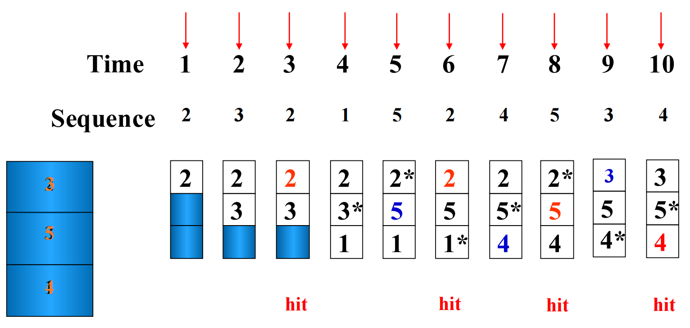
-
先进先出（FIFO）：选择缓存中进入最早的块进行替换（不管是否命中）
Example
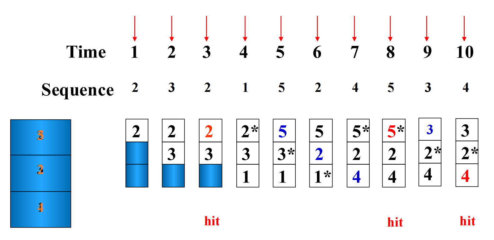
-
最优替换算法（OPT）：理论上的模拟算法，选择未来最长时间不会访问的块进行替换
Example
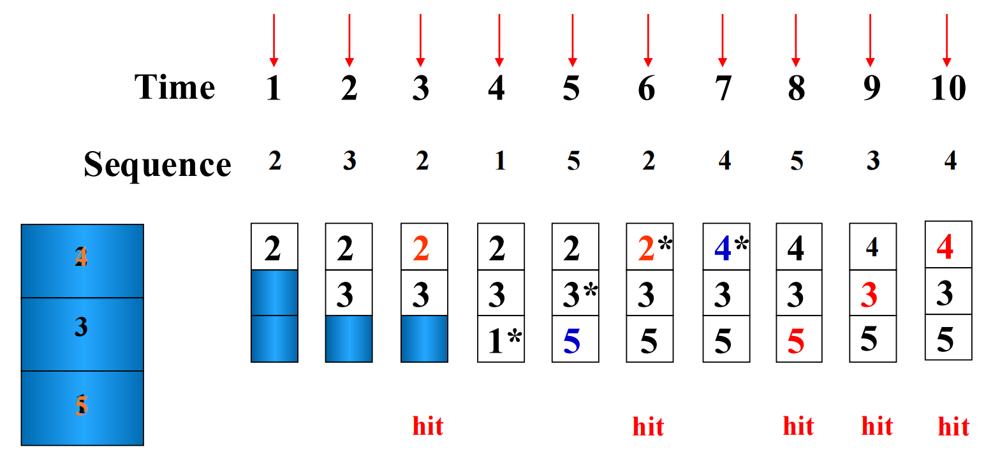
命中率的影响因素
- 命中率与替换算法有关
-
命中率与访问序列有关
thrashing 颠簸现象
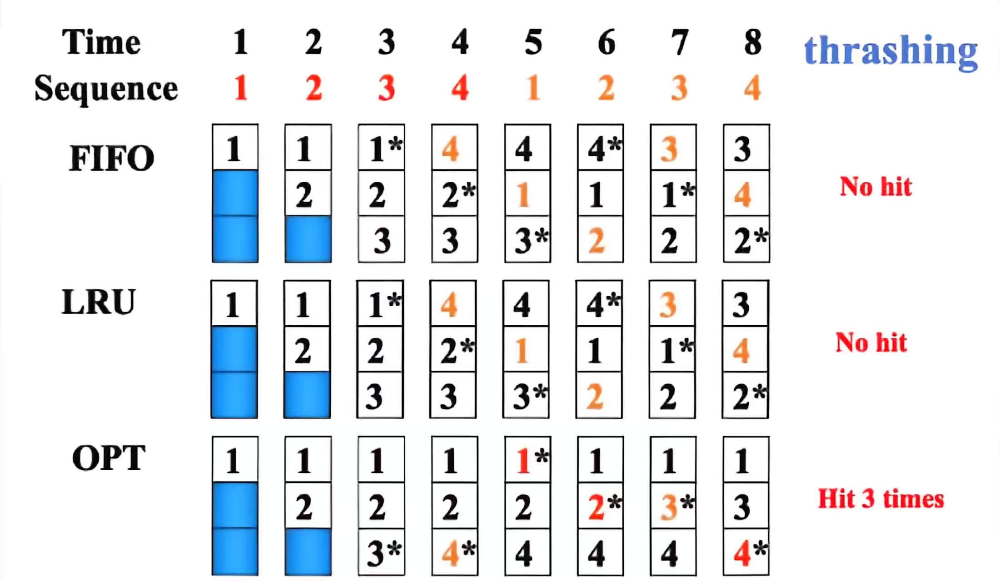
-
命中率与块的大小有关
Example
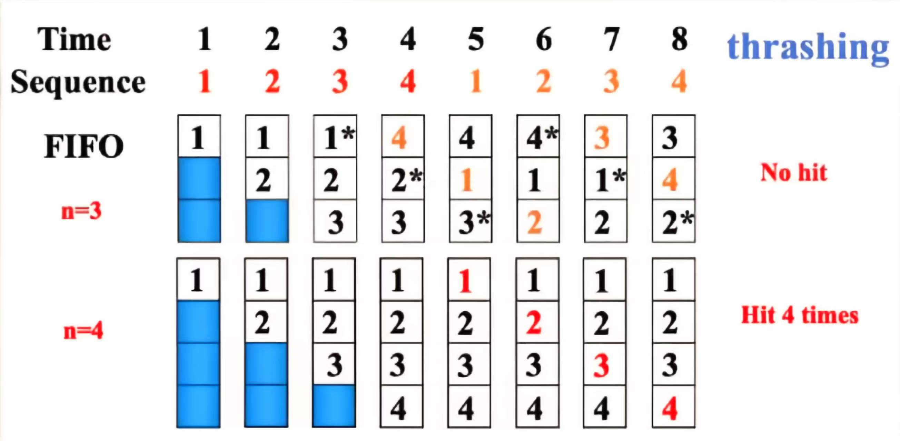
栈替换算法¶
- \(B_t(n)\)：表示在时刻 \(t\)，容量为 \(n\) 个数据块的缓存中所包含的页面（或数据块）集合
- 包含性质：\(B_t(n) \subseteq B_{t}(n+1)\)
- LRU 算法是栈替换算法，但是 FIFO 算法不是（因为不满足包含性质）
Using LRU
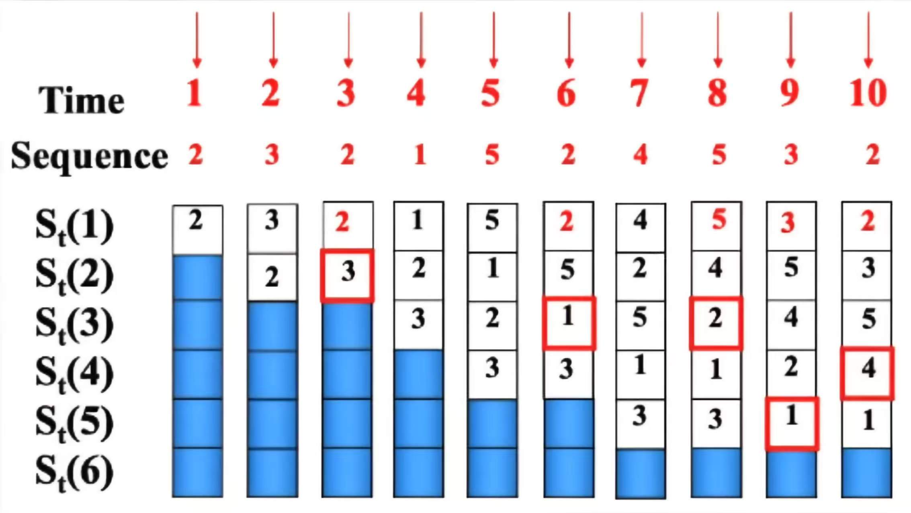
当 cache 块的数目为 N = 4 时，一共会命中 4 次
LRU 比较对法¶
- 比较对法：仅使用普通的逻辑门和触发器来实现 LRU 替换算法
- 基本思想：
- 让每个缓存块两两组合
- 使用一个比较对触发器来记录该比较对中两个缓存块被访问的顺序
- 然后利用门电路组合每个比较对触发器的状态，就可以根据 LRU 算法找到需要被替换的块
Example
假设有三个缓存块 A、B、C，有三对组合 AB、AC、BC
每一对的访问顺序分别由比较对触发器 \(T_{AB}\)、\(T_{AC}\) 和 \(T_{BC}\) 表示
- \(T_{AB}=1\) 表示 A 比 B 最近被访问过
- \(T_{AB}=0\) 表示 B 比 A 最近被访问过
Exercise
- 如果最近访问的块是 A，而 C 是最久未被访问的块：\(T_{AB}=1\)，\(T_{AC}=1\)，\(T_{BC}=1\)
- 如果最近访问的块是 B，而 C 是最久未被访问的块：\(T_{AB}=0\)，\(T_{AC}=1\)，\(T_{BC}=1\)
公式（用来判断谁应该被替换）：\(C_{LRU} = T_{AC} \cdot T_{BC}\)、\(B_{LRU} = T_{AB} \cdot \overline{T_{BC}}\)、\(A_{LRU} = \overline{T_{AB}} \cdot \overline{T_{AC}}\)
结构：每进行一次访问都会改变触发器的状态
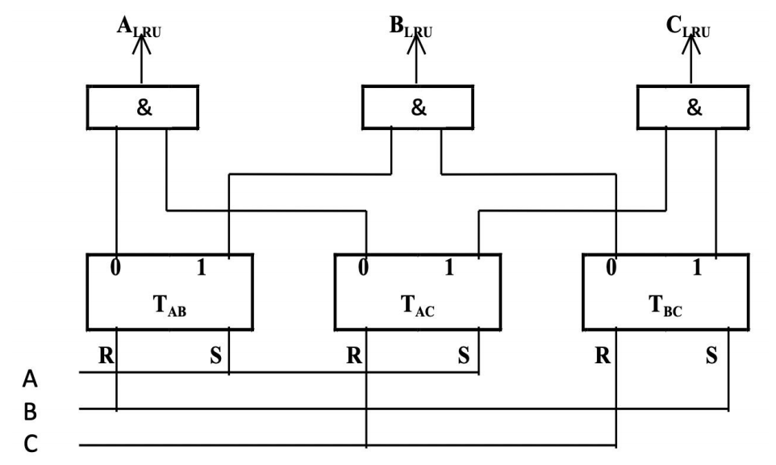
硬件使用分析
假设 \(p\) 是缓存块的数量
- 由于每个缓存块都可能被替换，其信号需要通过一个与门来生成，因此与门的数量将等于 \(p\)。
- 与门的输入端数量为 \(p - 1\)
- 比较对触发器的数量是 \(C_p^2\)，即 \(p \cdot (p-1) / 2\)
当 \(p\) 超过 8 时，需要的触发器过多，这个算法就不适用了
写策略¶
-
Write Hit：
- write-through：发生写命中时，数据被同时写入缓存和主存
- 确保强数据一致性；每一次写入都会立即到达主存，内存始终拥有最新数据
- 缓存控制位：仅需一个有效位
- 典型应用场景：对数据完整性要求极高的实时系统
-
write-back：发生写命中时，数据被写入缓存，但不会写入主存
- 只有当被修改的脏数据块从缓存中被驱逐时，主存才会被更新，减少了内存带宽的使用
- 缓存控制位：同时包含有效位和脏位（用来跟踪修改情况）
- 典型应用场景：以性能为优先的通用处理器
Dirty Bit
- 脏位：与缓存行相关联的一个状态位
- 用于指示缓存中的数据是否已被修改但尚未写回主存
- 对写回策略至关重要，用于在驱逐缓存行时确定是否需要执行写回操作
- write-through：发生写命中时，数据被同时写入缓存和主存
-
Write Miss：
- Write allocate：发生写缺失时，将缺失的数据块从主存加载到缓存中，然后在缓存中执行写操作（dirty bit = 1）
- 利用空间局部性和时间局部性来优化未来的访问
- 对应 write-back 策略
- No Write Allocate（Write around）：发生写缺失时，数据直接写入主存，而不将数据块加载到缓存中
- 数据不存储在缓存中，可以防止一次性或低频次写入造成的缓存污染
- 对应 write-through 策略
- 典型应用场景：日志系统或流媒体数据（写入的数据很少会被再次读取）
- Write allocate：发生写缺失时，将缺失的数据块从主存加载到缓存中，然后在缓存中执行写操作（dirty bit = 1）
-
写停顿 (Write stall)：在执行 write-through 过程中，CPU 必须等待写入操作完成时发生的现象
-
写缓冲 (Write buffer)：用于 write-through 优化
- 一个小型缓冲区，用于临时保存 write-through 数据，允许 CPU 在无需等待内存写入完成的情况下继续执行指令
- 减轻了 write-through 策略带来的性能损失，在写入操作密集时非常有帮助
Warning
写缓冲区并不能完全消除停顿，因为如果突发写入量大于缓冲区容量，缓冲区仍有可能被填满
Tip
这里补充了 Cache 安全相关知识，请参照 PPT
缓存性能¶
- CPU Execution Time = (CPU clock cycles + Memory stall cycles) × Clock cycle time
-
Memory stall cycles = IC × MemAccess refs per instructions × Miss rate × Miss penalty
翻译
MemAccess refs per instructions 每条指令的存储器访问引用次数
Memory stall cycles 存储器停顿周期
-
CPU Time 综合公式
\[ CPUtime = IC \times \left( CPI_{Execution} + \frac{MemAccess}{Inst} \times MissRate \times MissPenalty \right) \times CycleTime \]\[ CPUtime = IC \times \left( CPI_{Execution} + \frac{MemMisses}{Inst} \times MissPenalty \right) \times CycleTime \]其中的 CPI 执行 包含 ALU 指令和内存指令
-
平均内存访问时间
- AMAT = HitTime + MissRate × MissPenalty
- Miss penalty: 发生缺失时，将数据从主存加载到缓存所需的时间
- AMAT = AMAT_inst × Inst% + AMAT_data × Data%
- AMAT = HitTime + MissRate × MissPenalty
执行时间
性能提高基础方法¶
减少 MissRate¶
- 方法一：增加缓存块的大小
- 核心原理：利用空间局部性，一次加载更多连续数据，减少首次访问的强制性失效次数
- 主要优点：显著降低失效率，尤其对具备良好空间局部性的程序效果明显
- 潜在缺点：增大 Miss penalty（传输更多数据），且可能因映射冲突增加冲突失效概率
- 适用场景：数据访问具有强空间局部性的应用
- 方法二：增加缓存的大小
- 原理：提供更大空间容纳数据，减少容量失效与冲突失效的发生
- 优点：显著降低缓存失效率，优化效果通常直观且明显
- 缺点：Hit Time 延长，同时增加硬件成本与功耗开销
- 场景：处理大型数据集的应用
-
方法三：增加相联度
- 原理：允许内存块映射到缓存中的多个位置，而非单一固定位置，从而分散冲突风险
- 优点：显著降低 Conflict Miss，在数据访问模式复杂或存在大量共享数据时效果尤为明显
- 缺点：
- 硬件复杂度提升（需并行比较多个标签）
- 可能导致 Hit Time 和 Miss penalty 略有增加
- 功耗和面积占用增加
- 适用场景：适用于数据访问模式易引发冲突失效的程序
- 必须在更高的相联度与硬件成本之间取得平衡
2:1 缓存规则
大小为 \(N\) 的直接映射缓存的缺失率 \(\approx\) 大小为 \(N/2\) 的 2 路组相联缓存的缺失率
意义：更高的相联度可以减少冲突缺失，有助于以更小的缓存容量实现相同的缺失率
其余方法
- 方法四：way prediction 会预测目标 block 在哪一路
- 方法五：pseudo-associativity 伪相联
- 方法六：compiler optimizations 编译器优化（通过代码和数据布局优化局部性，减少 miss）
减少 MissPenalty¶
-
方法一：多级缓存
- 核心原理：在 CPU 和主存之间添加 L1/L2/L3 缓存；当 L1 发生缺失时，先检查速度较快的 L2/L3，以避免缓慢的主存访问
- 优点：显著减少 Miss Penalty；是现代处理器的标准配置
- 缺点：增加了硬件复杂性和制造成本
- 应用：所有现代高性能处理器和计算系统
-
方法二：读失效优先于写操作
- 核心原理：写操作入缓冲区等待，读失效时优先处理读请求，减少 CPU 等待读数据的阻塞时间
- 主要优点：显著降低有效失效开销，在读取密集型场景下性能提升尤为明显
- 潜在缺点：可能会增加写操作的延迟（但由于写操作通常对实时性不敏感，此影响较小）
- 适用场景：读操作频率远高于写操作的应用程序
导致的 RAW 的冲突需要解决！
其他方法
- 方法三：Critical Word First（Cache miss 时，优先返回 CPU 当前急需的 word，而不是等整个 block 都传完）
- 方法四：Merging Write Buffers（把多个相邻或相同 block 的写合并，减少内存写次数）
- 方法五：Victim Cache（小型全相联 Cache，放在主 Cache 和下一级之间，主 Cache 被替换出去的 block 先放入 victim cache）
减少 HitTime¶
- 方法一：小而简单的缓存
-
方法二：在缓存索引期间避免地址转换
- 核心原理：使用虚拟地址而非物理地址进行缓存索引，从而绕过关键路径上的 TLB 查找
- 优点：显著减少缓存命中时间，并由于延迟降低而允许更高的 CPU 时钟频率
- 缺点：存在缓存别名风险（多个虚拟地址映射到同一个物理地址），需要特殊的硬件解决方案
- 应用场景：高性能处理器设计，其中为了实现峰值效率，必须将每一周期的延迟降至最低
-
方法三：流水线化缓存访问（把 Cache 访问拆成多个流水级）
- 方法四：trace caches（存储已经解码过的动态指令序列）
并行化¶
Reduce the miss penalty and miss rate via parallelism
- 非阻塞缓存 (non-blocking caches)：miss 正在处理时，允许 CPU 继续执行其他可执行指令
- 硬件预取 (hardware prefetching)：硬件自动检测访问模式并提前取数据
- 编译器预取 (compiler prefetching)：编译器插入 prefetch 指令
性能提高先进方法¶
-
采用虚拟索引和组相联结构的流水线化 L1 缓存
- 核心原理：将缓存访问（译码、比较、读取）拆分为流水线阶段，允许 CPU 每个周期发起新请求，提升带宽
- 主要优势：显著增加缓存带宽，支持更高的 CPU 时钟频率，提升连续访问的吞吐量
- 潜在代价：增加了单次访问的命中时间（延迟），数据需流经多个流水线阶段才能返回
- 适用场景：适用于高频率、高带宽需求的现代高性能处理器架构
-
通过多存储体与多端口增加一级数据缓存带宽
- 核心原理：将缓存划分为多个独立存储体 (Banks)，各 Bank 拥有独立读写端口，支持 CPU 并行访问以提升总带宽
- 技术优势：显著增加缓存带宽，完美适配多核处理器或乱序执行 CPU 的高并发数据访问需求
- 潜在挑战：引入了更复杂的硬件控制逻辑，增加了芯片设计与验证的复杂度
- 适用场景：高性能多核处理器架构、图形处理单元 (GPU) 及其它需要极高内存带宽的应用
-
通过优化替换策略降低失效率
- 核心原理：使用 LRU（最近最少使用）或 LFU（最不经常使用）等智能算法预测未来访问模式，优先替换无用数据，优于简单的 FIFO 策略
- 优点：显著降低缓存失效率
- 缺点：增加硬件复杂度与实现开销
- 适用场景：缓存容量受限，且数据访问模式具有较强局部性与可预测性的场景。